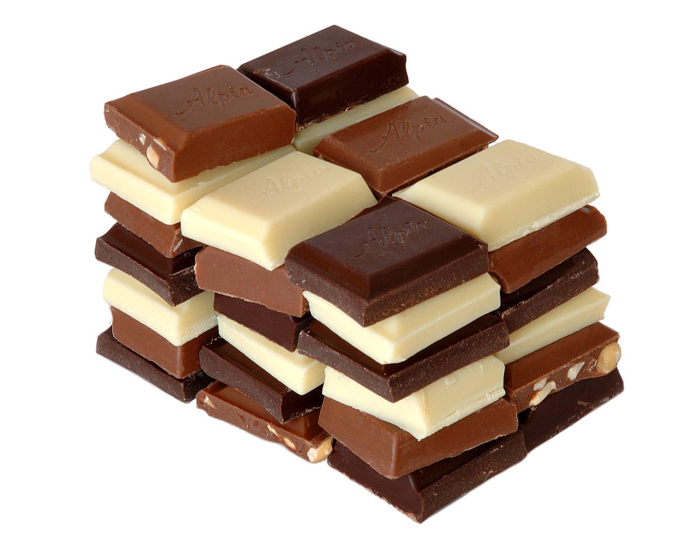

Chocolate is a food preparation in the form of a paste or solid block made from roasted and ground cacao seeds, typically sweetened.
Chocolate is a delicious dessert that you can either eat alone, or add to something sweet! It can be used in ice cream, smore's, hot chocolate, pudding, and so much more. There are also many types of chocolate candies including M&M's, Twix, Reese's, and Cruch bars. Chocolate can even be eaten alone, which is still so delicious!
Because there are so many different ways to each chocolate, most people sometimes do not know what to choose to eat! I personally love chocolate cake which I did not mention, but I personally love it super much.
Here Are Some Websites On Chocolate